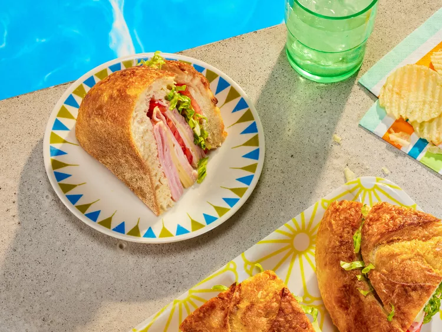

The Ultimate Pool Sandwich

Description
a stuffed sandwich that will not fall apart while eating or traveling!
filled with tasty Ingredients that can be customized to your liking, if you wish
Ingredients
- 1 round bread loaf
- 2 Tbs butter
- 2 Tbs yellow mustard
- 2 Cup Shredded iceberg lettuce
- 1/2 lb sliced deli ham
- 1/2 lb sliced deli turkey
- 6 slices Swiss cheese
- 6 slices Cheddar or Colby Jack cheese
Steps
- Preheat the oven to 350F (175C)
- cut a wide circle out of the bread loaf top as if you were making a soup bowl.
store loaf top for later.
- hollow out the loaf, while make sure not to pierce the sides.
the load interior can be used for other projects
- melt butter with mustard for 15 minutes in a bowl. mix after
- brush butter mixture on exterior of bread loaf and top. place both on a baking sheet
- bake in oven for 10 minutes. let cool to room temperature
- layer the inside of the Sandwich like so (starting from bottom to top):
- lettuce
- cheese
- ham
- turkey
repeat until sandwich is full, place loaf top on top.
- wrap sandwich with plastic wrap,
place on baking sheet while placing another sheet on top with weight
- place this structure in fridge, letting sit for 1 hour or overnight
- eat whole or cut into slices
Home